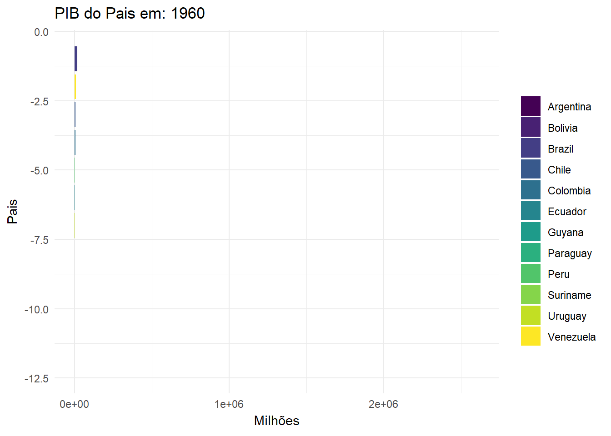
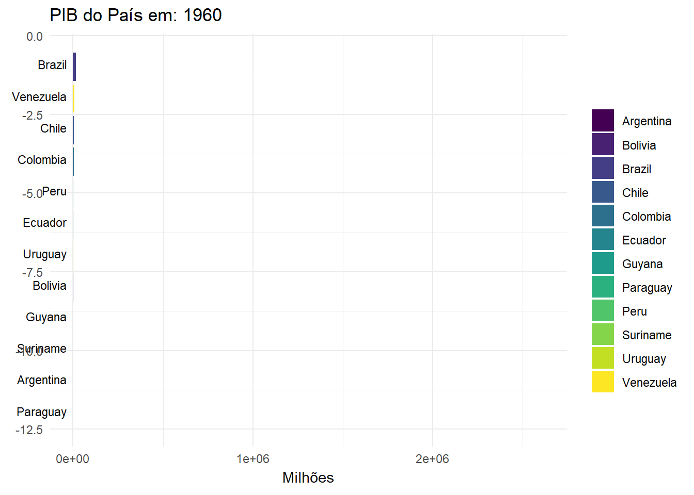
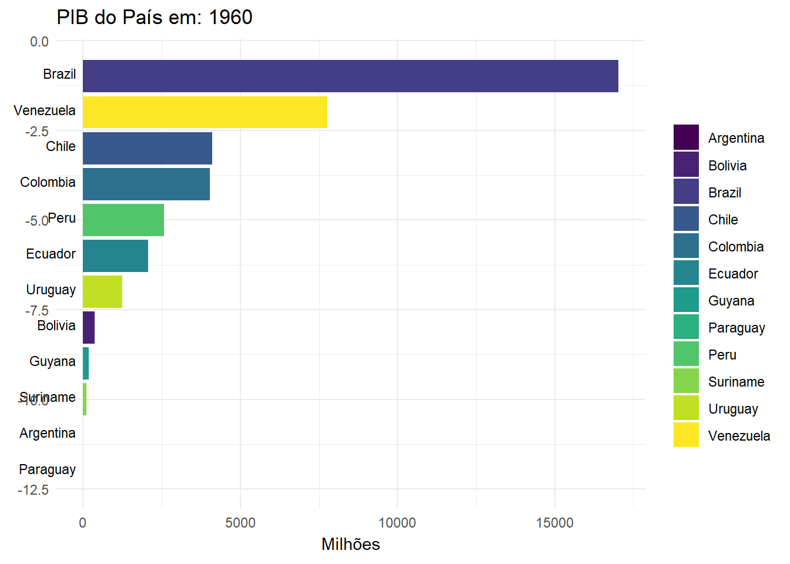

#Importar o banco de dados
pib_mundo <- read.csv2("countries_gdp_hist.csv")
#Dar uma olhada no banco de dados com str(), length(), sumary(), head()
#Queremos olhar para o Pib dos paises da America do Sul ao longo dos anos,
#então vamos utilizar a coluna year(), total_gdp_million, intermediate_region
#e country_name
#Aqui filtramos só o que utilizariamos do banco de dados
america_do_sul <- pib_mundo[pib_mundo$intermediate_region == "South America",
c("year","total_gdp_million","country_name")]
#Unique para ver se o nome dos paises está certo, e também precisamos
#transformar em factor e numeric algumas colunas.
america_do_sul <- america_do_sul %>%
mutate(country_name = recode(country_name,
"Venezuela (Bolivarian Republic of)"
= "Venezuela",
"Bolivia (Plurinational State of)" =
"Bolivia"))
america_do_sul$country_name <- factor(america_do_sul$country_name)
america_do_sul$total_gdp_million <- as.numeric((america_do_sul$total_gdp_million))Relatório 2 Bar chart Race
Introdução
Neste relatório estarei explicando passo a passo como foi a criação do grafico do tipo Bar Chart Race.
Desenvolvimento
Para quem não está familiarizado o gráfico Bar Chart Race é um grafico que demonstra como as variaveis qualitativas se comportam, geralmente ao longo do tempo, e quem está em primeiro em relação a variavel quantitativa observada e quem está em ultimo, tal qual uma corrida, por isso o nome Bar Chart Race, uma tradução direta seria Corrida de gráficos de barras.
O banco de dados de AIDS utilizado nos gráficos anteriores não tinham variaveis interessantes para demonstrar este tipo de grafico, então procurei no https://www.kaggle.com por algum gráfico mais interessante para demonstrar o funcionamento. Optei então pelo classico gráfico de PIB dos paises com informações de 1960 até 2021.
Programando
Comecei importando o banco de dados para o R, selecionando as variaveis, criando as categorias por paises e outros tratamentos que viessem a ser necessarios.
Após o tratamento inicial criei ranks para categorizar os paises ao longo de cada ano, isto sera util quando formos demonstrar os gráficos no GIF.
#Rank dos maiores PIBs para que quando mude o ano os paises subam e desçam
america_do_sul <- america_do_sul %>%
arrange(year, desc(total_gdp_million)) %>%
group_by(year) %>%
mutate(rank = factor(row_number())) %>%
ungroup()
america_do_sul$rank <- as.numeric(america_do_sul$rank)Criando o Gráfico
Neste momento chegamos na parte de criar o grafico no ggplot, não cabe a este relatorio explicar todo o processo de criação, apenas momentos pontuais que julguei necessario mostrar, então estarei mostrando os códigos e depois explicando as alterações que percebi que eram necessárias para consertar os erros que geravam no plot.
Primeiro Erro
grafico <- ggplot(america_do_sul, aes(x= reorder(country_name,-rank),
y = total_gdp_million,
fill = country_name)) +
geom_bar(stat = "identity") +
coord_flip() +
labs(title = "PIB do Pais em: {closest_state}",
x = "Pais", y = "Milhões",
fill = "") +
theme( plot.title = element_text(hjust = 0.5),
axis.text.x = element_text(size = 10),
panel.grid.major = element_line(size = 0.5,
color = "lightblue",
linetype = "blank"),
panel.grid.minor = element_line(size = 0.5,
color = "lightblue",
linetype = "blank")) +
scale_fill_viridis_d(option = "viridis") +
theme_minimal() +
# O gráfico não está alterando de colocação os paises com maior e menor PIB
#quando joga para o gganimate animar
transition_states(year,
transition_length = 5,
state_length = 1
)
grafico
O Primeiro Erro que tive foi o fato de que os paises não mudavam de posição ao longo dos anos, mesmo quando o PIB de algum dos paises se tornavam maior ou menor que outros, depois de ficar bastante tempo buscando por exemplos, conversando com chat, eu percebi que o problema consistia na Linha 80, mais precisamente no eixo x.
Perceba que eu informei ao grafico:
grafico <- ggplot(america_do_sul, aes(x= reorder(country_name,-rank), y = total_gdp_million, fill = country_name))
A questão é que no eixo x, eu peço pela função reorder para olhar para a varivel country_name e colocar do menor para o maior (Neste caso o menor sendo o primeiro do rank pois é o numero 1) quando digito -rank, o problema é que ele vai tentar colocar em ordem de quem tem maior PIB no geral, e não ao longo do tempo, isso torna o gráfico estatico, bastava que eu ajustasse o eixo x para que fosse ao longo do tempo e este problema a principio seria resolvido.
Segundo Erro
grafico <- ggplot(america_do_sul, aes(x= -rank,
y = total_gdp_million,
fill = country_name)) +
geom_bar(stat = "identity") +
coord_flip() +
labs(title = "PIB do Pais em: {closest_state}",
x = "Pais", y = "Milhões",
fill = "") +
theme( plot.title = element_text(hjust = 0.5),
axis.text.x = element_text(size = 10),
panel.grid.major = element_line(size = 0.5,
color = "lightblue",
linetype = "blank"),
panel.grid.minor = element_line(size = 0.5,
color = "lightblue",
linetype = "blank")) +
scale_fill_viridis_d(option = "viridis") +
theme_minimal() +
# O gráfico não está alterando de colocação os paises com maior e menor PIB
#quando joga para o gganimate animar
transition_states(year,
transition_length = 5,
state_length = 1
)
grafico
Gráfico ajustado, agora as variaveis mudam ao longo do tempo, mas com isso me deparo com um segundo problema, não tem mais o nome de cada pais ao lado da barra, achei que isso se resolveria usando a função scale_x_continuos mas para evitar aumentar a quantidade códigos só informarei que não funcionou, nem um pouco a verdade, fica de curiosidade o codigo:
scale_x_continuous(breaks = -america_do_sul$rank, labels = america_do_sul$country_name)
Depois de procurar um pouco, não muito felizmente, vi que dava para resolver utilizando a função geom_text.
Ajustando com o geom_text, uma alteração no coord_flip com o clip =“off” e voialá, temos nossa Corridas de Gráficos de Barras funcionando, apesar de ainda mal ajustada.
grafico <- ggplot(america_do_sul, aes(x= -rank,
y = total_gdp_million,
fill = country_name)) +
geom_bar(stat = "identity") +
coord_flip(clip = "off") +
geom_text(aes(y = 0, label = paste(country_name, " ")),
vjust = 0.2, hjust = 1, size = 3) +
labs(title = "PIB do País em: {closest_state}",
x = "", y = "Milhões",
fill = "") +
theme( plot.title = element_text(hjust = 0.5),
axis.text.x = element_text(size = 10),
panel.grid.major = element_line(size = 0.5,
color = "lightblue",
linetype = "blank"),
panel.grid.minor = element_line(size = 0.5,
color = "lightblue",
linetype = "blank")) +
scale_fill_viridis_d(option = "viridis") +
theme_minimal() +
# O gráfico não está alterando de colocação os paises com maior e menor PIB
#quando joga para o gganimate animar
transition_states(year,
transition_length = 5,
state_length = 1
)
grafico
Resultado
grafico <- ggplot(america_do_sul, aes(x= -rank,
y = total_gdp_million,
fill = country_name)) +
geom_bar(stat = "identity") +
coord_flip(clip = "off") +
geom_text(aes(y = 0, label = paste(country_name, " ")),
vjust = 0.2, hjust = 1, size = 3)+
labs(title = "PIB do País em: {closest_state}",
x = "", y = "Milhões",
fill = "") +
theme( plot.title = element_text(hjust = 0.5),
panel.grid.major = element_line(size = 0.5,
color = "lightblue",
linetype = "blank"),
panel.grid.minor = element_line(size = 0.5,
color = "lightblue",
linetype = "blank",
)
) +
scale_fill_viridis_d(option = "viridis") +
theme_minimal() +
transition_states(year,
state_length = 5,
transition_length = 2
) +
view_follow(fixed_x = TRUE) +
ease_aes('linear')
animate(grafico, nframes = 122, renderer = gifski_renderer(),fps = 5)
anim_save("PIB.gif")